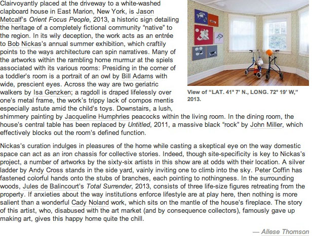

To read the article online click here
For images and more information on the exhibition click here
Additonal Press:
BLINNK Blog
The Suffolk Times
GalleristNY
Art in America
The New York Times
For inquiries and directions please call 212.560.0570 or email info@martosgallery.com